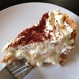

MENU
APPETIZERS
REWENA BREAD 10
Tradition Maori Bread
PAUA FRITTER 16
Finely diced pieces of paua, served with a side salad and horopito dressing.
RAW FISH 20
Dried snapper fish marinated in coconut cream, served with tomatoes and spring onions.
POACHED SALMON 22
Salmon poached in an orange and pistachio glaze, served with rewena bread.
SEAFOOD BASKET 25
Crumbed mussels, salt and pepper squid, crumbed hoki bites and garlic prawns.
MAIN
FISH OF THE DAY 25
Beer battered fish and kumara fries, served with a side salad and homemade tartare.
MUSSELS AND SCALLOPS 25

Steamed mussel & scallop mousse, honey and soy broth.
SEAFOOD CHOWDER 30
Creamy chowder filled with terakihi, prawn, hoki, scallops and mussels, served with flatbread.
PORK BELLY 30
Slow cooked pork belly served on a bed of apple slaw with roasted kumara, and crispy noodle.
LAMB STEAK 33
New Zealand Lamb coated in a kawakawa crumb, served with Dijon mustard glazed carrots, roasted butternut squash and a mushroom Jus.
VENISON 33
Venison crusted with horopito, served with glazed plums, cabbage salad and red wine Jus.
DESSERT
KĀPITI ICE CREAM 10
Check for daily specials
STEAM PUDDING 12
Golden syrup flavoured steam pudding, served with vanilla ice cream
MINI PAVLOVA 16
Mini Pavlova served with kawakawa and lemon infused cream and fresh fruit.
BANOFFEE PIE 16
Toffee, fresh bananas and fresh cream.